# load tidyverse from pacman
pacman::p_load(tidyverse,dplyr,ggridges,ggthemes,colorspace,ggiraph,plotly,patchwork, lubridate, ggrepel,ggdist)Take-home Ex 01
Building Elegant and yet Informative Data Visualisation
For the final product, you can use the table of content to the right to navigate straight to 3.0 Data Visualisation. If not, you can proceed to enjoy reading the step by step thought process for this visualisation.
1.0 Overview
1.1 Setting the scene
There are two major residential property market in Singapore, namely public and private housing. Public housing aims to meet the basic need of the general public with monthly $14,000 for families/couples buying a new HDB flat. Singapore is a city-state with limited land resource. Housing, on the other hand, is one of the basic need of people of this city-state. In order to ensure that all citizen in the country can access to affordable housing, the government have initiated massive public housing programme since independent.
1.2 The Task
Assuming the role of a graphical editor of a media company, you are requested to prepare minimum two and maximum three data visualisation to reveal the private residential market and sub-markets of Singapore for the 1st quarter of 2024.
2.0 Set Up
2.1 Loading the packages into R
T he pac::p_load() function to load the required R packages in the working environment. The following packages are used in this set up:
- ggthemes: Extra themes, geoms, and scales for ggplot2.
- tidyverse: A collection of core packages designed for data science, used extensively for data preparation and wrangling.
- ggridges: a ggplot2 extension specially designed for plotting ridgeline plots
- colorspace:
- ggiraph: for making ‘ggplot’ graphics interactive.
- plotly: R library for plotting interactive statistical graphs.
- patchwork: specially designed for combining separate ggplot2 graphs into a single figure.
- lubridate: for easy and fast parsing of Date / Time
- ggrepel: an R package provides geoms for ggplot2 to repel overlapping text labels.
- ggdist: a ggplot2 extension specially design for visualising distribution and uncertainty
2.2 Importing the data sets
Five sets of data are provided for this exercise:
- 2023 Quarter 1 Residential Transaction: ResidentialTransaction20240308160536.csv
- 2023 Quarter 2 Residential Transaction: ResidentialTransaction20240308160736.csv
- 2023 Quarter 3 Residential Transaction: ResidentialTransaction20240308161009.csv
- 2023 Quarter 4 Residential Transaction: ResidentialTransaction20240308161109.csv
- 2024 Quarter 1 Residential Transaction: ResidentialTransaction20240414220633.csv
All five sets of data consists of past transactions between Q1 of 2023 to Q1 of 2024, with 21 variables that will be explored in detail after the data sets are imported.
# load transaction data using readr, part of tidyverse package
data.23Q1 <- read_csv("data/ResidentialTransaction20240308160536.csv")
data.23Q2 <- read_csv("data/ResidentialTransaction20240308160736.csv")
data.23Q3 <- read_csv("data/ResidentialTransaction20240308161009.csv")
data.23Q4 <- read_csv("data/ResidentialTransaction20240308161109.csv")
data.24Q1 <- read_csv("data/ResidentialTransaction20240414220633.csv")To add new column Quarter into each of the csv file.
data.23Q1$Quarter <- rep('23Q1',nrow(data.23Q1))
data.23Q2$Quarter <- rep('23Q2',nrow(data.23Q2))
data.23Q3$Quarter <- rep('23Q3',nrow(data.23Q3))
data.23Q4$Quarter <- rep('23Q4',nrow(data.23Q4))
data.24Q1$Quarter <- rep('24Q1',nrow(data.24Q1))Combining all the data set into one
df <- rbind(data.23Q1,data.23Q2,data.23Q3,data.23Q4,data.24Q1)To have a basic understanding of all 22 variables, glimpse() is used with 2024 Q1 data. We can see that there are 21 columns, with the following data types:
doubles:
Transacted Price ($),Area (SQFT),Unit Price ($ PSF),Area (SQM),Unit Price ($ PSM),Number of Unitscharacters: the rest of the 16 variables, including
Quarter
Interestingly, Nett Price is classified as characters, as it contains - character, although the rest of the columns should return doubles like Transacted Price ($)
# have a basic understanding for all 22 variables
glimpse(df)Rows: 26,806
Columns: 22
$ `Project Name` <chr> "THE REEF AT KING'S DOCK", "URBAN TREASU…
$ `Transacted Price ($)` <dbl> 2317000, 1823500, 1421112, 1258112, 1280…
$ `Area (SQFT)` <dbl> 882.65, 882.65, 1076.40, 1033.34, 871.88…
$ `Unit Price ($ PSF)` <dbl> 2625, 2066, 1320, 1218, 1468, 1767, 1095…
$ `Sale Date` <chr> "01 Jan 2023", "02 Jan 2023", "02 Jan 20…
$ Address <chr> "12 HARBOURFRONT AVENUE #05-32", "205 JA…
$ `Type of Sale` <chr> "New Sale", "New Sale", "New Sale", "New…
$ `Type of Area` <chr> "Strata", "Strata", "Strata", "Strata", …
$ `Area (SQM)` <dbl> 82.0, 82.0, 100.0, 96.0, 81.0, 308.7, 42…
$ `Unit Price ($ PSM)` <dbl> 28256, 22238, 14211, 13105, 15802, 19015…
$ `Nett Price($)` <chr> "-", "-", "-", "-", "-", "-", "-", "-", …
$ `Property Type` <chr> "Condominium", "Condominium", "Executive…
$ `Number of Units` <dbl> 1, 1, 1, 1, 1, 1, 1, 1, 1, 1, 1, 1, 1, 1…
$ Tenure <chr> "99 yrs from 12/01/2021", "Freehold", "9…
$ `Completion Date` <chr> "Uncompleted", "Uncompleted", "Uncomplet…
$ `Purchaser Address Indicator` <chr> "HDB", "Private", "HDB", "HDB", "HDB", "…
$ `Postal Code` <chr> "097996", "419535", "269343", "269294", …
$ `Postal District` <chr> "04", "14", "27", "27", "28", "19", "10"…
$ `Postal Sector` <chr> "09", "41", "26", "26", "79", "54", "27"…
$ `Planning Region` <chr> "Central Region", "East Region", "North …
$ `Planning Area` <chr> "Bukit Merah", "Bedok", "Yishun", "Yishu…
$ Quarter <chr> "23Q1", "23Q1", "23Q1", "23Q1", "23Q1", …2.3 Understanding the data
On top of the data types that is automatically assigned by R to help the program know how to process it, we can split the data into 4 types of data category to help ourselves for future analytics application. You can refer to the FAQ, Data Dictionary and Methodology in URA website.
Qualitative
1. Nominal: Project Name, Address, Type of Sale,
2. Ordinal: Type of Area, Property Type, Sales Date, Purchaser Address Indicator, Postal Code, Postal District, Postal Sector, Planning Region, Planning Area and Quarter.
Some of the variables I have classified under ordinal are contextual. For example, I can choose to fill in the order for Purchaser Address Indicator as Private category is higher order than HDB category. The context is purchaser that address is Private is likely to be a person with higher Social Economic Status (SES) compared to a purchaser with HDB as address. Same could be applied to Postal Code, Postal District, Postal Sector, Planning Region and Planning Area.
Quantitative
3. Discrete: Number of Units and Tenure. Note that Tenure is still a chr data type as of now. If we choose to use this column for analysis, we do need to do data preparation on this. Tenure could also be classified under continuous data for more granularity.
4. Continuous: Transacted Price ($),Area (SQFT), Unit Price ($ PSF), Area (SQM), Unit Price ($ PSM), and Nett Price($). Note that Nett Price($) is still a chr data type as of now. If we choose to use this column for analysis, we do need to do data preparation on this.
Special Case: Completion Date is classified as chr, but a quick look at the data df, we will realise that this variable is a mix of quantitative and qualitative data type of Uncomplete and actual date of completion, which could be converted and analyse as doubles.
Some important observations: 1. Transacted Price ($) and Nett Price($) are similar. In this analysis, we will use Transacted Price ($) for simplicity, as Nett Price($) has fair amount of missing data, and it is prices after deducting the value of the indirect discounts or benefits, and not representive for all transactions. 1. Area (SQFT) and Area (SQM), and Unit Price ($ PSF) and Unit Price ($ PSM) are similar measures in different unit. We will use Area (SQFT) and Unit Price ($ PSF)
Next we look at the basic statistics of the current data using summary()
Project Name Transacted Price ($) Area (SQFT) Unit Price ($ PSF)
Length:26806 Min. : 440000 Min. : 322.9 Min. : 138
Class :character 1st Qu.: 1280000 1st Qu.: 721.2 1st Qu.:1384
Mode :character Median : 1660000 Median : 990.3 Median :1762
Mean : 2143286 Mean : 1191.6 Mean :1852
3rd Qu.: 2320000 3rd Qu.: 1302.4 3rd Qu.:2260
Max. :392180000 Max. :144883.4 Max. :5756
Sale Date Address Type of Sale Type of Area
Length:26806 Length:26806 Length:26806 Length:26806
Class :character Class :character Class :character Class :character
Mode :character Mode :character Mode :character Mode :character
Area (SQM) Unit Price ($ PSM) Nett Price($) Property Type
Min. : 30.0 Min. : 1484 Length:26806 Length:26806
1st Qu.: 67.0 1st Qu.:14893 Class :character Class :character
Median : 92.0 Median :18966 Mode :character Mode :character
Mean : 110.5 Mean :19930
3rd Qu.: 121.0 3rd Qu.:24327
Max. :13460.0 Max. :61962
NA's :6
Number of Units Tenure Completion Date
Min. : 1.000 Length:26806 Length:26806
1st Qu.: 1.000 Class :character Class :character
Median : 1.000 Mode :character Mode :character
Mean : 1.005
3rd Qu.: 1.000
Max. :60.000
Purchaser Address Indicator Postal Code Postal District
Length:26806 Length:26806 Length:26806
Class :character Class :character Class :character
Mode :character Mode :character Mode :character
Postal Sector Planning Region Planning Area Quarter
Length:26806 Length:26806 Length:26806 Length:26806
Class :character Class :character Class :character Class :character
Mode :character Mode :character Mode :character Mode :character
# data summary
summary(df)From the continuous data above, we can conclude that there is a possibility of extreme outliers. The Number of Units has a max of 60, while the 3rd Quartile is 1.000. Let’s examine the data by sorting it in descending order using arrange(desc()) and take a look at data with Number of Units, as it greatly affect the analysis of Transaction Price ($).
df %>%
filter(`Number of Units` > 1) %>%
arrange(desc(`Number of Units`)) # A tibble: 12 × 22
`Project Name` `Transacted Price ($)` `Area (SQFT)` `Unit Price ($ PSF)`
<chr> <dbl> <dbl> <dbl>
1 MEYER PARK 392180000 144883. 2707
2 BAGNALL COURT 115280000 68491. 1683
3 KEW LODGE 66800000 25177 2653
4 KARTAR APARTMENTS 18000000 6964. 2585
5 MONDO MANSION BUIL… 6280000 5490. 1144
6 N.A. 10600000 6747. 1571
7 N.A. 61080008 32149. 1900
8 N.A. 32200000 14123. 2280
9 N.A. 6150000 4342. 1416
10 EAST VIEW GARDEN 6100000 8338. 732
11 N.A. 8000000 3659. 2187
12 CLAYMORE PLAZA 7000000 4209. 1663
# ℹ 18 more variables: `Sale Date` <chr>, Address <chr>, `Type of Sale` <chr>,
# `Type of Area` <chr>, `Area (SQM)` <dbl>, `Unit Price ($ PSM)` <dbl>,
# `Nett Price($)` <chr>, `Property Type` <chr>, `Number of Units` <dbl>,
# Tenure <chr>, `Completion Date` <chr>, `Purchaser Address Indicator` <chr>,
# `Postal Code` <chr>, `Postal District` <chr>, `Postal Sector` <chr>,
# `Planning Region` <chr>, `Planning Area` <chr>, Quarter <chr>We have 12 rows that have transactions containing more than 1 unit sold, and a check on the Address shows that there are 5 sales that are en bloc cases which should be remove from the analysis. These en bloc cases are likely sales to companies for purpose of redevelopment rather than individual purchasers. See this link on the Meyer Park en bloc transaction. Otherwise, those 7 cases of transactions with more than one unit sold should be included as are likely the cases of purchase of multiple units or the purchase of multiple adjacent plots of land.
Let’s take a quick look at distribution before any data wrangling:
df %>%
ggplot(aes(y = `Transacted Price ($)`,
x = `Property Type`)) +
geom_boxplot()+
facet_grid(~Quarter) +
coord_cartesian(xlim=c(1,6)) +
scale_y_continuous(labels = scales::comma) +
theme_wsj() +
theme(axis.text.x = element_text(angle = 90, vjust = 0.5, hjust=1))ggplot(data = df ,
aes(x = `Transacted Price ($)`,
y = Quarter,
fill = factor(stat(quantile))
)) +
stat_density_ridges(
geom = "density_ridges_gradient",
calc_ecdf = TRUE,
quantiles = 4,
quantile_lines = TRUE) +
scale_fill_economist(name = "Quartiles") +
theme_ridges() +
facet_wrap(~`Property Type`,scales = "free") +
theme_economist() +
scale_x_continuous(labels = NULL)
2.3.1 Identifying Sub-markets
Land vs. Strata
To lend some background context, you can refer to this link: Landed vs. Strata Landed Basically, Strata means you only owns the property build on this land, but do not own the land itself. Land means you own the land and have more freedom and responsibility in terms of the constructions etc. The application of this knowledge for analysis is that Strata and Land classification can be identify as the sub-markets as owning a piece of land is likely to be more expensive for the purchaser compared to Strata title.
df %>%
filter(`Type of Area` == 'Land') %>%
ggplot(aes(x= `Quarter`,
fill = `Purchaser Address Indicator`)) +
geom_bar() +
facet_grid(~`Property Type`) +
theme_economist() +
theme(axis.text.x = element_text(angle = 90, vjust = 0.5, hjust=1)) +
ggtitle("Land: No. of Transactions by Property Type")
df %>%
filter(`Type of Area` == 'Strata') %>%
ggplot(aes(x= `Quarter`,
fill = `Purchaser Address Indicator`)) +
geom_bar() +
facet_wrap(~`Property Type`) +
theme_economist() +
theme(axis.text.x = element_text(angle = 90, vjust = 0.5, hjust=1)) +
ggtitle("Strata: No. of Transactions by 'Property Type'")
To understand which Type of Area has high market value by Transacted Price ($):
df %>%
select(`Transacted Price ($)`,`Type of Area`) %>%
group_by(`Type of Area`) %>%
summarise(`Total Transaction Price ($)` = sum(`Transacted Price ($)`), `Mean Transaction Price ($)` = mean(`Transacted Price ($)`), `Median Transaction Price ($)` = median(`Transacted Price ($)`))# A tibble: 2 × 4
`Type of Area` `Total Transaction Price ($)` `Mean Transaction Price ($)`
<chr> <dbl> <dbl>
1 Land 9051931648 5765562.
2 Strata 48400988508 1917934.
# ℹ 1 more variable: `Median Transaction Price ($)` <dbl>Diving a bit deeper.We segregate them by Property Type
df %>%
select(`Transacted Price ($)`,`Type of Area`, `Property Type`) %>%
group_by(`Property Type`, `Type of Area`) %>%
summarise(`Median Transaction Price ($)` = median(`Transacted Price ($)`))# A tibble: 10 × 3
# Groups: Property Type [6]
`Property Type` `Type of Area` `Median Transaction Price ($)`
<chr> <chr> <dbl>
1 Apartment Land 6670000
2 Apartment Strata 1699394
3 Condominium Strata 1650000
4 Detached House Land 11050000
5 Detached House Strata 4800000
6 Executive Condominium Strata 1400000
7 Semi-Detached House Land 5700000
8 Semi-Detached House Strata 3735000
9 Terrace House Land 3705000
10 Terrace House Strata 3038000df %>%
select(`Transacted Price ($)`,`Type of Area`, `Property Type`) %>%
group_by(`Property Type`,`Type of Area`) %>%
summarise(`Median Transaction Price ($)` = median(`Transacted Price ($)`, .groups = 'drop')) %>%
ggplot(aes(y = `Median Transaction Price ($)`,
x = `Property Type`)) +
geom_point() +
theme(axis.text.x = element_text(angle = 90, vjust = 0.5, hjust=1)) +
scale_y_continuous(labels = scales::comma)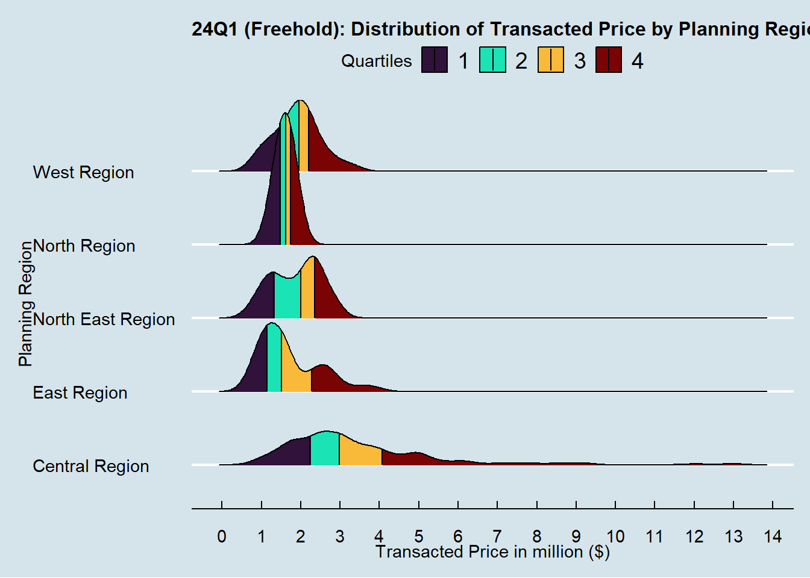
Some learning points from these plots and tibbles:
Apartment, Condominium and Terrace House seems to be affected most by outliers. There are two extreme outliers for transactions in 23Q1 and they are the two en bloc sales with 60 and 47 units of condominium each. As mention, the 5 en bloc sales will be removed from the data set to enable meaningful analysis.
No. of transactions for Apartment classified under
Type of Areaas Land is low.There is no transaction of Condominium and Executive Condominium as these categories of Property Type are always strata forType of Sale. The URA Methodology Miscellaneous tab explains some of the terminologies.No. of transactions for Detached House, Semi-Detached House and Terrace House are low compared to the rest of the three categories.
Sub markets to focus on based on the number of transactions could be the following lists.
For Land
Type of Sale: Detached House, Semi-Detached House, and Terrace House.For Strata
Type of Sale: Apartment, Condominium, and Executive Condominium.
However, we should also note that we can prioritise the sub-market for analysis based on the total, mean and median
Transaction Price ($)in each category (Land and Strata) instead of just looking at volume of transactions. In theType of Areawith Total ofTransacted Price ($)tibbles above, we see that Land type transaction low in volume, the total transactions in the 5 quarters is about 1/5 the total transactions of Stata type sales. However, when we look at the mean and medianTransacted Price ($), we observe that mean and medianTransaction Price ($)Land type is roughly 3 times of Strata type.This mean that Land type has low volume for number of transactions but generally higher average
Transacted Price ($).For Strata type, it has high volume but lower average
Transacted Price ($).
Lastly, the scatter plot of median
Transaction Price ($)suggest that there is a difference in the median price for the sameProperty Typewith differentType of Area. Hence, the should study each of this sub-markets individually.
2.4 Data Wrangling
In this section, we aim to clean the data set to ensure the usefulness and accuracy of the visualisation.
This is achieved by:
- Removing irrelevant data and outliers
- Appropriate categorisation of variables
- Additions of new variables to add new dimensions to analysis
2.4.1 Removing the en bloc sales (irrelevant data)
For the follow code chunk, we aim to remove all the enbloc sales, including the 5 transactions that we have found in section 2.3. While we have no idea if there are more than 5 cases of en bloc sales, the follow code chunk will effectively remove all the rows with the string “ENBLOC” in Address column.
df.c <- df %>%
filter(!grepl('ENBLOC', df$Address))
df.c# A tibble: 26,801 × 22
`Project Name` `Transacted Price ($)` `Area (SQFT)` `Unit Price ($ PSF)`
<chr> <dbl> <dbl> <dbl>
1 THE REEF AT KING'S… 2317000 883. 2625
2 URBAN TREASURES 1823500 883. 2066
3 NORTH GAIA 1421112 1076. 1320
4 NORTH GAIA 1258112 1033. 1218
5 PARC BOTANNIA 1280000 872. 1468
6 NANYANG PARK 5870000 3323. 1767
7 PALMS @ SIXTH AVEN… 4950000 4521. 1095
8 N.A. 3260000 1555. 2096
9 WHISTLER GRAND 850000 441. 1926
10 NORTHOAKS 1268000 1604. 791
# ℹ 26,791 more rows
# ℹ 18 more variables: `Sale Date` <chr>, Address <chr>, `Type of Sale` <chr>,
# `Type of Area` <chr>, `Area (SQM)` <dbl>, `Unit Price ($ PSM)` <dbl>,
# `Nett Price($)` <chr>, `Property Type` <chr>, `Number of Units` <dbl>,
# Tenure <chr>, `Completion Date` <chr>, `Purchaser Address Indicator` <chr>,
# `Postal Code` <chr>, `Postal District` <chr>, `Postal Sector` <chr>,
# `Planning Region` <chr>, `Planning Area` <chr>, Quarter <chr>In the df.c tibble, it showed that 5 rows had been removed. Now there is only 26,801 rows instead of the original 26,806 rows in the initial df. This confirm that there are only 5 en bloc sales in the data frame.
2.4.2 Appropriate categorisation of variables
Previously, we have identified the Sale Date as Ordinal quantitative variable largely because it is classified as chr type in R. However, when we apply the knowledge from Fundamentals of Data Visualization Chapter 2 and R for Visual Analytics Chapter 17 date or time in fact, can be treated as discrete or continuous data.
XXX to continue from here XXX
3.0 Data Visualisation
df.c %>%
filter(`Type of Area` == 'Land', `Quarter` == '24Q1') %>%
ggplot(aes(x = `Transacted Price ($)`,
y = `Planning Region`,
fill = factor(stat(quantile))
)) +
stat_density_ridges(
geom = "density_ridges_gradient",
calc_ecdf = TRUE,
quantiles = 4,
quantile_lines = TRUE) +
scale_fill_viridis_d(name = "Quartiles") +
theme_ridges()+
scale_x_continuous(labels = scales::comma) +
theme_economist() +
theme(plot.title = element_text(size=14), axis.text.x = element_text(angle = 90, vjust = 0.5, hjust=1)) +
ggtitle("24Q1 Distribution of Transacted Price by Planning Region")
df.c %>%
filter(`Type of Area` == 'Land', `Quarter` == '24Q1', `Planning Region` == "North Region") %>%
ggplot(aes(x = `Property Type`,
y = `Transacted Price ($)`)) +
stat_halfeye(adjust = 0.5,
justification = -0.2,
.width = 0,
point_colour = NA) +
geom_boxplot(width = .20,
outlier.shape = NA) +
stat_dots(side = "left",
justification = 1.2,
binwidth = 10000,
dotsize = 1) +
coord_flip() +
theme_economist() +
theme(plot.title = element_text(size=14), axis.text.x = element_text(angle = 90, vjust = 0.5, hjust=1)) +
scale_y_continuous(labels = scales::comma) +
ggtitle("24Q1 North Region by Property Type (Land)")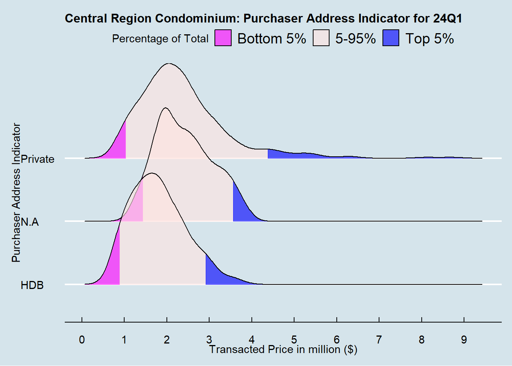
df.c %>%
filter(`Type of Area` == 'Land', `Quarter` == '24Q1', `Planning Region` == "North East Region") %>%
ggplot(aes(x = `Property Type`,
y = `Transacted Price ($)`)) +
stat_halfeye(adjust = 0.5,
justification = -0.2,
.width = 0,
point_colour = NA) +
geom_boxplot(width = .20,
outlier.shape = NA) +
stat_dots(side = "left",
justification = 1.2,
binwidth = 100000,
dotsize = 1) +
coord_flip() +
theme_economist() +
theme(plot.title = element_text(size=14), axis.text.x = element_text(angle = 90, vjust = 0.5, hjust=1)) +
scale_y_continuous(labels = scales::comma) +
ggtitle("24Q1 North East Region by Property Type (Land)")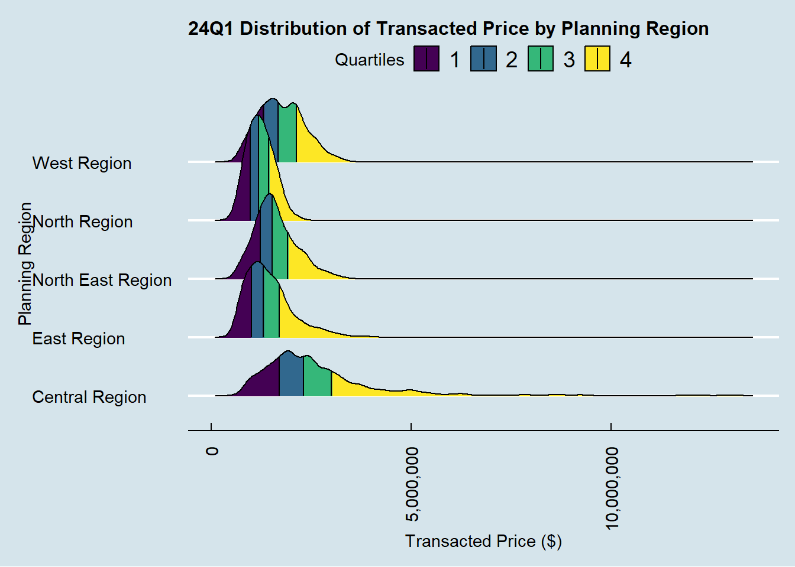
df.c %>%
filter(`Type of Area` == 'Land', `Quarter` == '24Q1', `Planning Region` == "West Region") %>%
ggplot(aes(x = `Property Type`,
y = `Transacted Price ($)`)) +
stat_halfeye(adjust = 0.5,
justification = -0.2,
.width = 0,
point_colour = NA) +
geom_boxplot(width = .20,
outlier.shape = NA) +
stat_dots(side = "left",
justification = 1.2,
binwidth = 10000,
dotsize = 1) +
coord_flip() +
theme_economist() +
theme(plot.title = element_text(size=14), axis.text.x = element_text(angle = 90, vjust = 0.5, hjust=1)) +
scale_y_continuous(labels = scales::comma) +
ggtitle("24Q1 West Region by Property Type (Land)")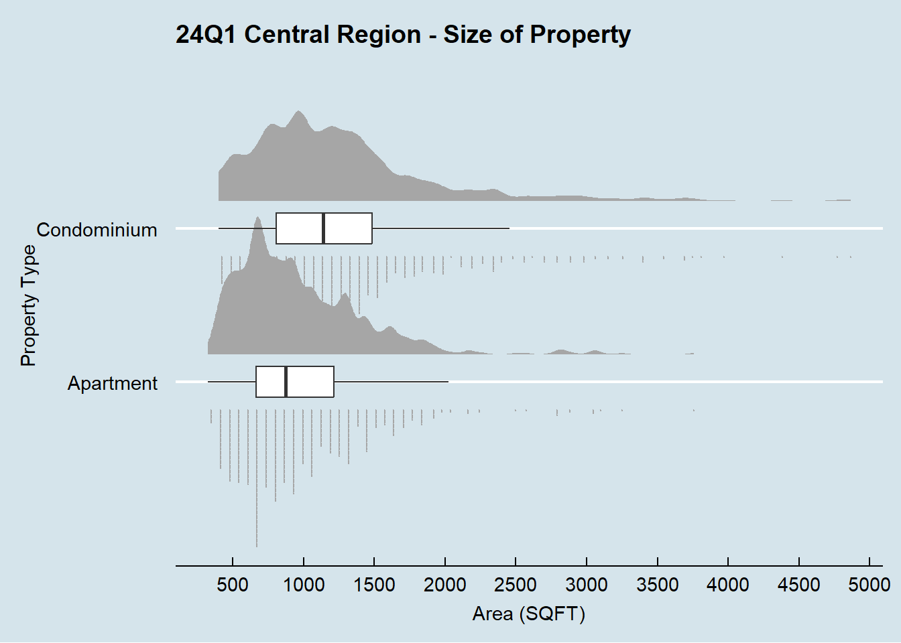
df.c %>%
filter(`Type of Area` == 'Land', `Quarter` == '24Q1', `Planning Region` == "East Region") %>%
ggplot(aes(x = `Property Type`,
y = `Transacted Price ($)`)) +
stat_halfeye(adjust = 0.5,
justification = -0.2,
.width = 0,
point_colour = NA) +
geom_boxplot(width = .20,
outlier.shape = NA) +
stat_dots(side = "left",
justification = 1.2,
binwidth = 500000,
dotsize = 0.2) +
coord_flip() +
theme_economist() +
theme(plot.title = element_text(size=14), axis.text.x = element_text(angle = 90, vjust = 0.5, hjust=1)) +
scale_y_continuous(labels = scales::comma) +
ggtitle("24Q1 East Region by Property Type (Land)")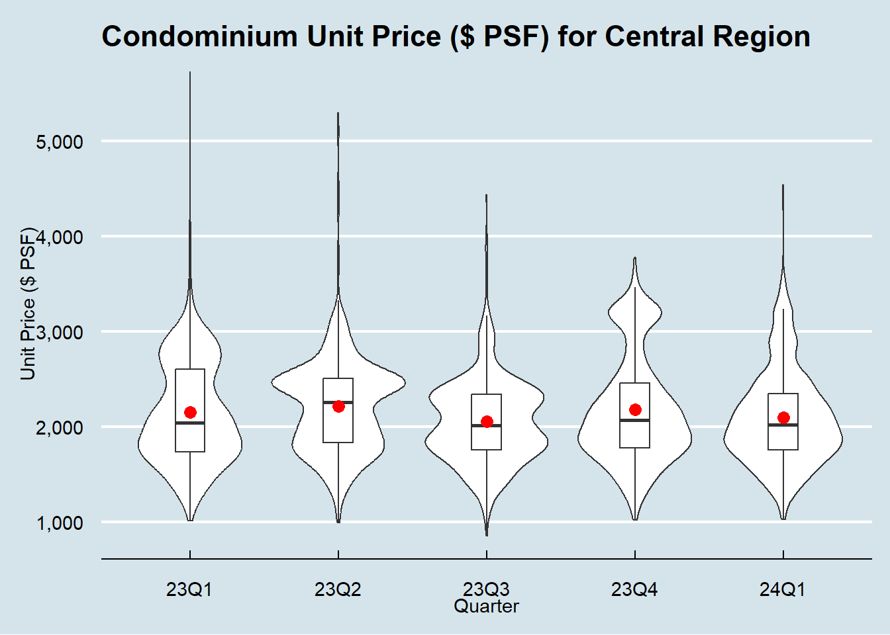
df.c %>%
filter(`Type of Area` == 'Land', `Quarter` == '24Q1', `Planning Region` == "Central Region") %>%
ggplot(aes(x = `Property Type`,
y = `Transacted Price ($)`)) +
stat_halfeye(adjust = 0.5,
justification = -0.2,
.width = 0,
point_colour = NA) +
geom_boxplot(width = .20,
outlier.shape = NA) +
stat_dots(side = "left",
justification = 1.2,
binwidth = 1000000,
dotsize = 0.2) +
coord_flip() +
theme_economist() +
theme(plot.title = element_text(size=14), axis.text.x = element_text(angle = 90, vjust = 0.5, hjust=1)) +
scale_y_continuous(labels = scales::comma) +
ggtitle("24Q1 Central Region by Property Type (Land)")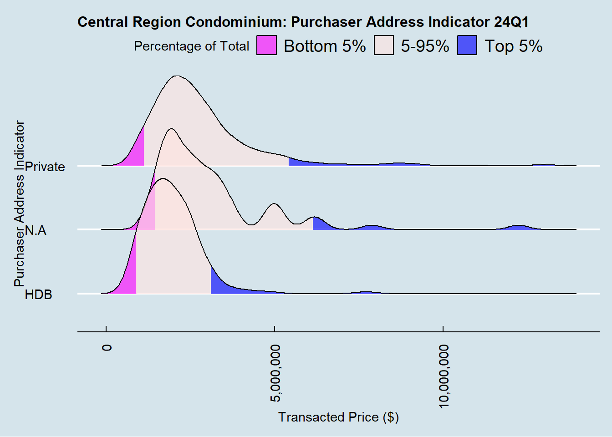
df.c %>%
filter(`Type of Area` == 'Strata', `Quarter` == '24Q1', `Planning Region` == "North Region") %>%
ggplot(aes(x = `Property Type`,
y = `Transacted Price ($)`)) +
stat_halfeye(adjust = 0.5,
justification = -0.2,
.width = 0,
point_colour = NA) +
geom_boxplot(width = .20,
outlier.shape = NA) +
stat_dots(side = "left",
justification = 1.2,
binwidth = 10000,
dotsize = 1) +
coord_flip() +
theme_economist() +
theme(plot.title = element_text(size=14), axis.text.x = element_text(angle = 90, vjust = 0.5, hjust=1)) +
scale_y_continuous(labels = scales::comma) +
ggtitle("24Q1 North Region by Property Type (Strata)")
df.c %>%
filter(`Type of Area` == 'Strata', `Quarter` == '24Q1', `Planning Region` == "North East Region") %>%
ggplot(aes(x = `Property Type`,
y = `Transacted Price ($)`)) +
stat_halfeye(adjust = 0.5,
justification = -0.2,
.width = 0,
point_colour = NA) +
geom_boxplot(width = .20,
outlier.shape = NA) +
stat_dots(side = "left",
justification = 1.2,
binwidth = 10000,
dotsize = 1) +
coord_flip() +
theme_economist() +
theme(plot.title = element_text(size=14), axis.text.x = element_text(angle = 90, vjust = 0.5, hjust=1)) +
scale_y_continuous(labels = scales::comma) +
ggtitle("24Q1 North East Region by Property Type (Strata)")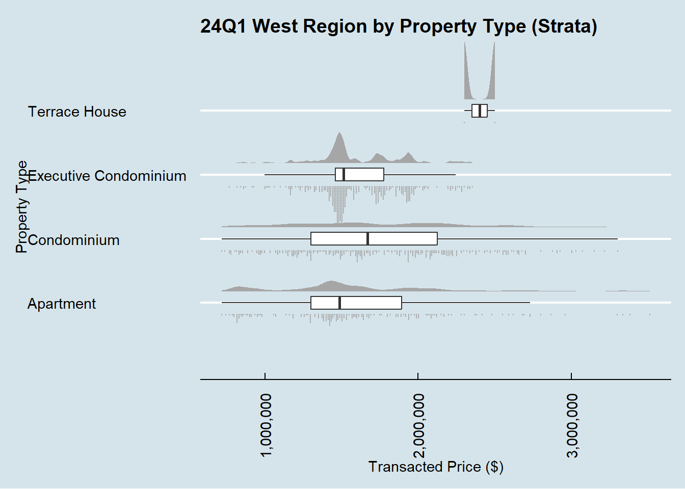
df.c %>%
filter(`Type of Area` == 'Land') %>%
ggplot(aes(y = `Transacted Price ($)`,
x = `Quarter`)) +
geom_boxplot()+
facet_grid(~`Property Type`) +
theme(axis.text.x = element_text(angle = 90, vjust = 0.5, hjust=1)) +
coord_cartesian(xlim=c(1,4)) +
geom_label_repel(aes(label = `Project Name`),
hjust = 0.5,
vjust = 0.5)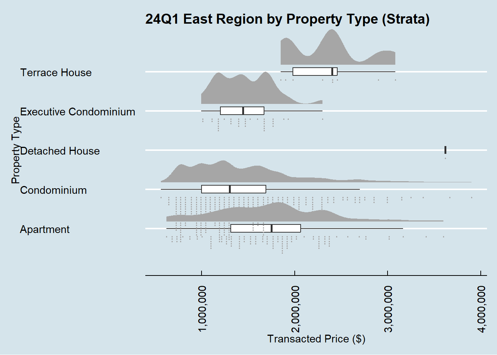
df.c %>%
filter(`Type of Area` == 'Strata') %>%
ggplot(aes(y = `Transacted Price ($)`,
x = Quarter)) +
geom_boxplot()+
facet_grid(~`Property Type`) +
coord_cartesian(xlim=c(1,6)) +
scale_y_continuous(labels = scales::comma) +
theme_wsj() +
theme(axis.text.x = element_text(angle = 90, vjust = 0.5, hjust=1))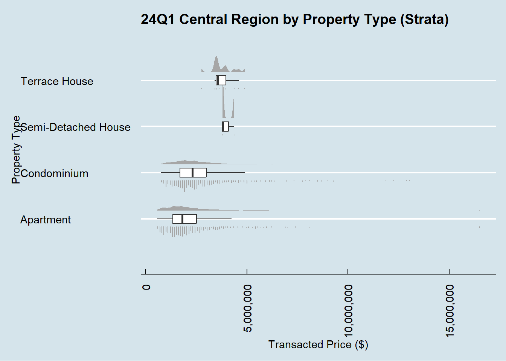
mean_strata_by_property_type <- df.c %>%
filter(`Type of Area` == 'Strata') %>%
group_by(`Property Type`) %>%
summarise(mean_price = mean(`Transacted Price ($)`))
df.c %>%
filter(`Type of Area` == 'Strata') %>%
ggplot(aes(x=`Area (SQM)`,
y = `Transacted Price ($)`,
color = `Property Type`)) +
geom_point_interactive() +
coord_cartesian(xlim=c(0,1000),
ylim=c(0,50000000)) +
geom_smooth(method = lm, se = FALSE) +
facet_wrap(~`Property Type`, scales = "free")mean_land_by_property_type <- df.c %>%
filter(`Type of Area` == 'Land') %>%
group_by(`Property Type`) %>%
summarise(mean_price = mean(`Transacted Price ($)`))
df.c %>%
filter(`Type of Area` == 'Land') %>%
ggplot(aes(x=`Area (SQM)`,
y = `Transacted Price ($)`,
color = `Property Type`)) +
geom_point_interactive() +
coord_cartesian(xlim=c(0,1000),
ylim=c(0,50000000)) +
geom_smooth(method = lm, se = FALSE) +
facet_wrap(~`Property Type`, scales = "free")
df.c %>%
filter(`Type of Area` == 'Strata') %>%
ggplot(aes(x = `Transacted Price ($)`,
y = Quarter,
fill = factor(stat(quantile))
)) +
stat_density_ridges(
geom = "density_ridges_gradient",
calc_ecdf = TRUE,
quantiles = 4,
quantile_lines = TRUE) +
scale_fill_viridis_d(name = "Quartiles") +
theme_ridges()+
facet_grid(~`Planning Region`, scales = "free")+
scale_x_continuous(labels = scales::comma) +
theme(axis.text.x = element_text(angle = 90, vjust = 0.5, hjust=1)) 
quarter_means <- df.c %>%
group_by(Quarter) %>%
summarise(mean_tprice = mean(`Transacted Price ($)`))
df.c %>%
ggplot(aes(y=`Transacted Price ($)`,
x=`Quarter`)
)+
geom_violin()+
geom_point(data = quarter_means,
aes(y = mean_tprice),
color = "red",
size = 3)+
scale_y_continuous(labels = scales::comma)+
ggtitle("Distribution of Transacted Prices by Quarter with mean")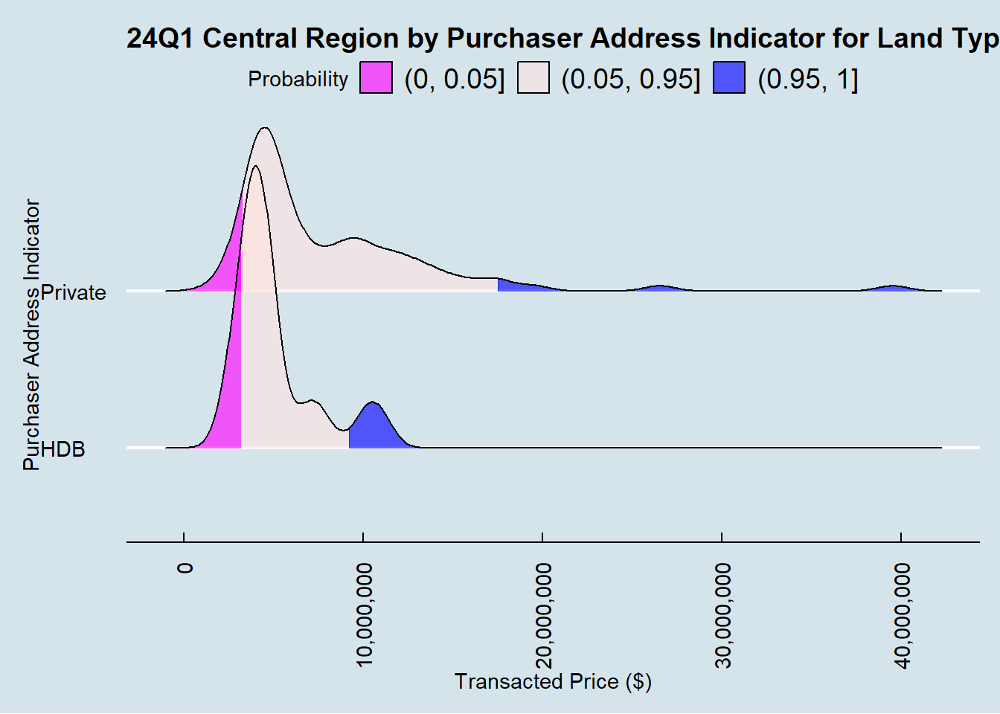
quarter_means <- df.c %>%
filter(`Type of Area` == 'Land') %>%
group_by(Quarter) %>%
summarise(mean_tprice = mean(`Transacted Price ($)`))
df.c %>%
ggplot(aes(y=`Transacted Price ($)`,
x=`Quarter`))+
geom_violin()+
geom_point(data = quarter_means,
aes(y = mean_tprice),
color = "red",
size = 3)+
scale_y_continuous(labels = scales::comma)+
ggtitle("Distribution of Transacted Prices by Quarter with mean for Land")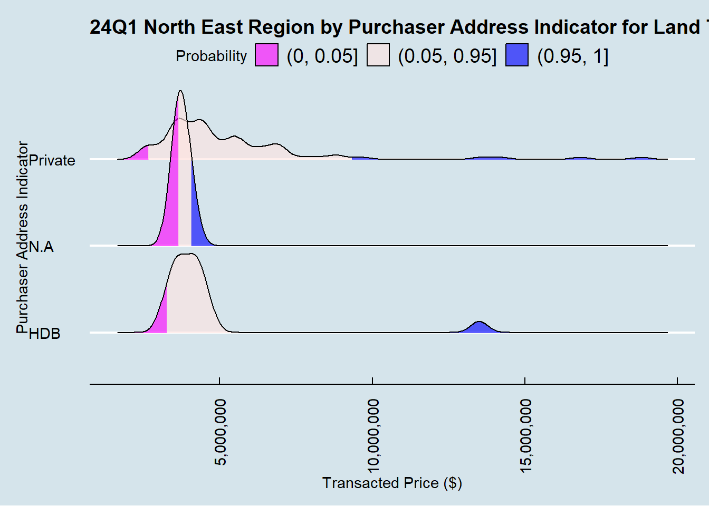
quarter_means <- df.c %>%
filter(`Type of Area` == 'Strata') %>%
group_by(Quarter) %>%
summarise(mean_tprice = mean(`Transacted Price ($)`))
df.c %>%
ggplot(aes(y=`Transacted Price ($)`,
x=`Quarter`)
)+
geom_violin()+
geom_point(data = quarter_means,
aes(y = mean_tprice),
color = "red",
size = 3)+
scale_y_continuous(labels = scales::comma)+
ggtitle("Distribution of Transacted Prices by Quarter with mean for Strata")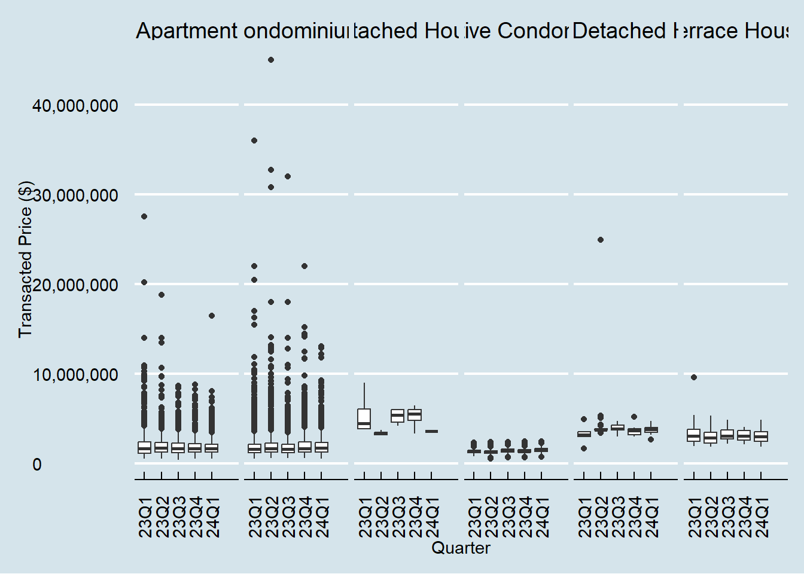
ggplot(data = df.c,
aes(x=`Property Type`,
fill = `Type of Sale`)) +
geom_bar() +
facet_grid(~Quarter, scales = "free") +
theme(axis.text.x = element_text(angle = 90, vjust = 0.5, hjust=1))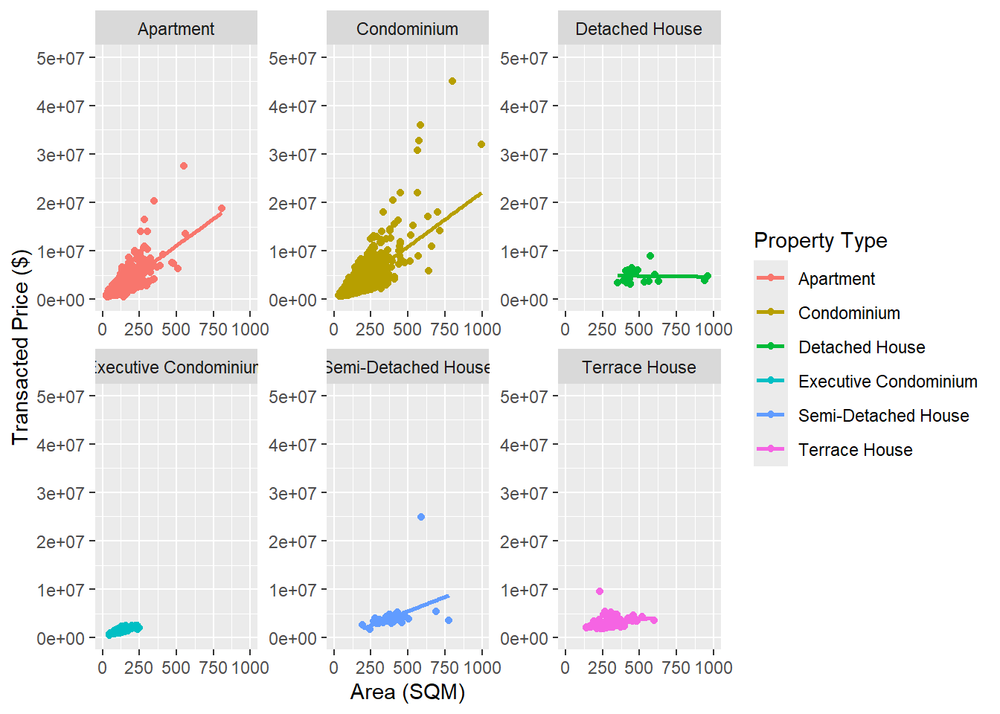
4.0 References
1. T.S. Kam, R for Visual Analytics Chapter 9 for visualisation of Ridgeline plots with quantile lines.
2. Claus O. Wilke, Fundamentals of Data Visualization Chapter 2 for understanding and classification of variables.
3. Stack Overflow, “Filter rows which contain a certain string” for removing en bloc sales from the data frame.